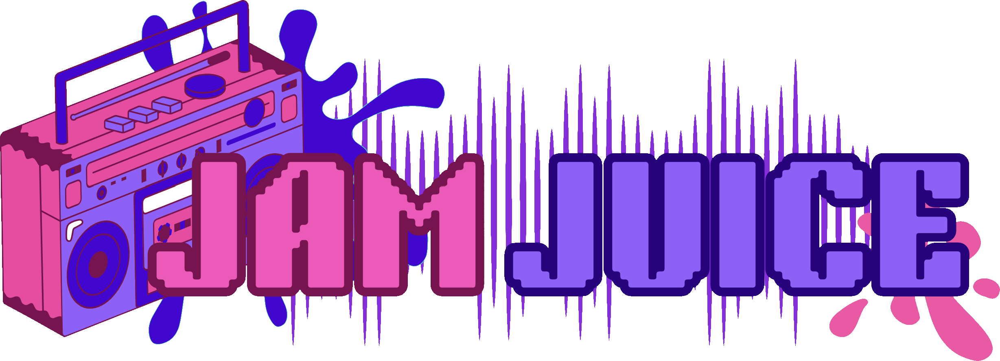

Finally, no more dealing with these annoying scam websites!
I coded my own little YouTube to MP3 app with Python! Click below and you can have
unlimited free MP3s just by pasting in the YouTube URL. Burn CDs, whatever you want.
I don't even think there is a length limit.
Try it for music, affirmations, ambiance, or anything! The files will show up in your Music folder.